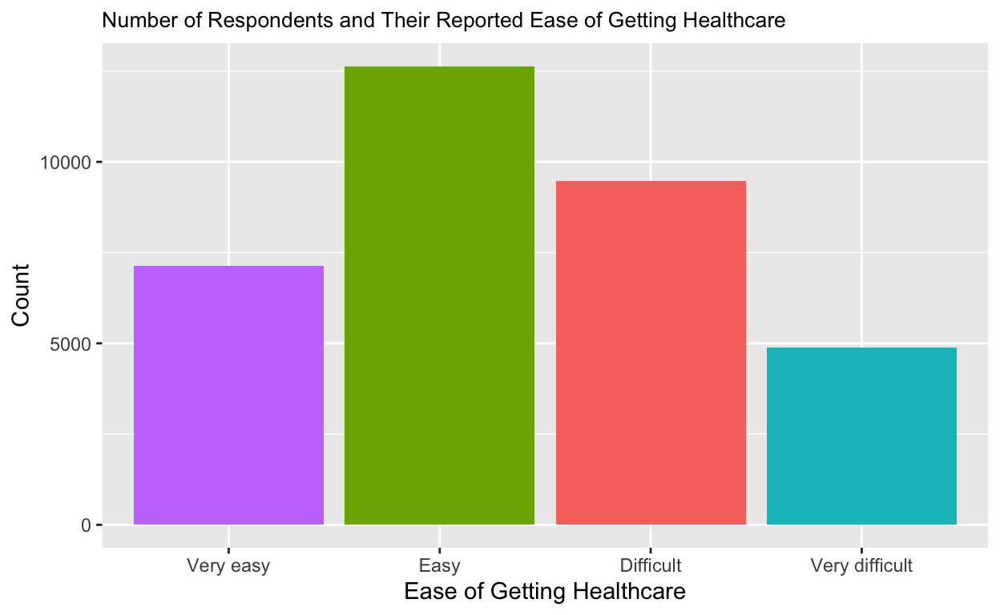

Introduction
This semester, I took a class on global health, and it discussed a lot about the barriers to accessing healthcare, and how these barriers have often been influenced by years of segregation and the history of colonization. I thought it could be really interesting to do an analysis on a certain aspect of that. The research question I came down to was inspired by a lecture by Dr. Jason Silverstein about racial health disparities in the United States as a result of segregation and deprivation, and how some of the current barriers to healthcare right now is caused by a lack of hospitals and clinics in people’s neighborhoods, especially neighborhoods with a population that is majority people of color, and difficulties with transportation in getting to neighborhoods that have hospitals or clinics where people can get the medical treatment they need. I wanted to explore this phenomenon in the context of countries that experienced long periods of colonization and have since gained their independence.
Research Question & Hypothesis
How does transportational infrastructure impact accessing healthcare in 36 selected countries of Africa? This is a very multifaceted question that will be difficult to answer as there are quite a few variables to account for. Despite this, I hypothesize that barriers in transportation, such as lack of access to paid transport or road checkpoints or blockages, are associated with increased rates of people that have gone without medical treatment in the last 12 months, or have reported greater difficulty with accessing medical treatment. In impoverished areas, especially those that are impoverished due to colonial history that continues to benefit the white western world, healthcare clinics are often not accessible through walking distance, and rather requires transport. If this transport is not accessible due to one’s inability to pay for it, or for the lack of existence of the transportation in the first place, then one would be less likely to be able to access medical treatment. This also acknowledges the financial consequences of taking unpaid time off work to take the transportation to access medical treatment, if one is allowed to take time off work without the threat of no longer having the job when they come back, and/or having to find a source of childcare when seeking medical treatment. In other words, if transportation is inaccessible due to its lack of infrastructure or because the lack of infrastructure provides financial consequences when accessing medical treatment, then one would be less likely to access healthcare.
The Data
The dataset used to measure the variables of interest is Afrobarometer’s Merged Round 6 Survey in 2016. This dataset merged data obtained from 36 countries, which are Algeria, Benin, Botswana, Burkina Faso, Burundi, Cameroon, Cape Verde, Cote d’Ivoire (Ivory Coast), Egypt, Gabon, Ghana, Guinea, Kenya, Lesotho, Liberia, Madagascar, Malawi, Mali, Mauritius, Morocco, Mozambique, Namibia, Niger, Nigeria, São Tomé and Príncipe, Senegal, Sierra Leone, South Africa, Sudan, Swaziland (Eswatini), Tanzania, Togo, Tunisia, Uganda, Zambia, and Zimbabwe. I acknowledge that each country’s history of colonization is immensely different, especially since this dataset includes different regions of Africa, which can mean different things for the state of each region’s, let alone each country’s, healthcare system. However, in keeping the entire dataset together, I could do future analysis on the differences between each country or each region and contextualize the reasons for that. For now, this will be an overarching analysis.
Explanatory Variables of Interest
The main explanatory variables of interest here are the report of whether there is a health clinic within walking distance, where yes = 1, no = 0, 9 = can’t determine and, -1 = missing (EA_FAC_D), and the report of whether there is a kind of paid transport within walking distance and on a daily basis, where 0 = No, 1 = Yes, 9 = Can’t determine, and -1 = Missing (EA_FAC_G).
Some additional explanatory variables I wanted to look at were the report of whether there are roadblocks set up by the police or army, where 0 = No, 1 = Yes, 9 = Don’t know, and -1 = Missing (EA_SEC_C), the report of whether there are any customs checkpoints, where 0 = No, 1 = Yes, 9 = Don’t Know, and -1 = Missing (EA_SEC_D), the report of whether there are any roadblocks or booms set up by the local community, where 0 = No, 1 = Yes, 9 = Don’t Know, and -1 = Missing (EA_SEC_E), and the report of whether a road was impassible due to something like a collapsed bridge, where 0 = No, 1 = Yes, 9 = Don’t Know, and -1 = Missing (EA_ROAD_B).
Outcome Variables of Interest
My main outcome variable is the report of how often someone in one’s family has gone without medical treatment in the last 12 months from the time they were surveyed, where 0 = Never, 1 = Just once or twice, 2 = Several times, 3 = Many times, 4 = Always, 9 = Don’t know, 98 = Refused to answer, and -1 = Missing (Q8C).
I also wanted to take a brief look at the report of whether they had been in contact with a health clinic or hospital within the last 12 months from the time they were surveyed, and if so, how difficult was it to get contact with the hospital, where 1 = Very easy, 2 = Easy, 3 = Difficult, 4 = Very difficult, 7 = No contact (DNR), 9 = Don’t know, 98 = Refused to answer, and -1 = Missing (Q55C).
What the Explanatory Variables Mean to My Research
In order to provide support for my hypothesis, a low report of health clinics being within walking distance, a low report of whether is a kind of paid transport within walking distance, a high report of roadblocks set up by the police or army, a high report of whether there are customs checkpoints, a high report of whether there are roadblocks or booms set up by the local community, and/or a high report of impassible roads in the area is associated with a high report of at least one person in a family that has gone without medical treatment within the past 12 months since they were surveyed, a low report of people having had contact with a hospital or a health clinic within the last 12 months since they were surveyed, and/or a high report of people having had difficulty with having contact with a hospital or a health clinic within the past 12 months from the time they were surveyed.
If there was any report of high rates of people going to a health clinic and/or with ease, associated with few reported transportation barriers, then my hypothesis will be disproven.
Confounding Variables?
In terms of confounding variables, if the respondents or one or more people in their families go without a cash income, then they will not be able to pay for medical treatment in the first place. Due to this, the confounding variables here are whether the respondent or someone in their family has gone without a cash income, and if so, how many times, where 0 = Never, 1 = Just once or twice, 2 = Several times, 3 = Many times, 4 = Always, 9 = Don’t know, 98 = Refused to answer, and -1 = Missing (Q8E), and if the respondent has a job that pays a cash income and if they are looking for a job, where 0 = No job and Not looking for a job, 1 = No and Looking for a job, 2 = Yes, part-time job, 3 = Yes, full-time job, 9 = Don’t know, 98 = Refused to answer, and -1 = Missing (Q95).
Loading and Selecting Variables of Interest
library(tidyverse)
afro_baro <- get(load("/Users/ameerarahman/Downloads/afrobarometer2016.RData"))
afro_baro <- afro_baro |>
select(EA_FAC_D, EA_FAC_G, EA_SEC_C, EA_SEC_D, EA_SEC_E, EA_ROAD_B, Q8C, Q8E, Q55C, Q95)
head(afro_baro) EA_FAC_D EA_FAC_G EA_SEC_C EA_SEC_D EA_SEC_E EA_ROAD_B Q8C Q8E Q55C
1 1 0 0 0 0 1 0 0 3
2 1 0 0 0 0 1 0 0 1
3 1 0 0 0 0 1 0 0 1
4 1 0 0 0 0 1 1 0 3
5 1 0 0 0 0 1 1 1 2
6 1 0 0 0 0 1 1 1 2
Q95
1 3
2 0
3 0
4 3
5 3
6 1Subsetting and/or Mutating the Variables to Include Factors I Want
As most survey data does, this dataset includes a factor that accounts for respondents that do not or cannot respond, along with respondents who may not know the answer to the question provided. This is valuable and informative data in certain aspects, but for the purposes of this research, I am subsetting my variables of interest so that they only include the information I need. I will be mutating these variables with ones that will include non-numerical responses, where the variables will be renamed with more informative labels. These steps will make it so my code in each analysis section will not include the extra step of me creating a new variable if needed (and makes it so I don’t have to keep looking back at the codebook ;)).
afro_baro <- afro_baro |>
filter(
(EA_FAC_D == 0 | EA_FAC_D == 1) & (EA_FAC_G == 0 | EA_FAC_G == 1) & (EA_SEC_C == 0 | EA_SEC_C == 1) & (EA_SEC_D == 0 | EA_SEC_D == 1) & (EA_SEC_E == 0 | EA_SEC_E == 1) & (EA_ROAD_B == 0 | EA_ROAD_B == 1) & (Q8C == 0 | Q8C == 1 | Q8C == 2 | Q8C == 3 | Q8C == 4) & (Q8E == 0 | Q8E == 1 | Q8E == 2 | Q8E == 3 | Q8E == 4) & (Q55C == 1 | Q55C == 2 | Q55C == 3 | Q55C == 4) & (Q95 == 0 | Q95 == 1 | Q95 == 2 | Q95 == 3)
) |>
mutate(
is_health_clinic = if_else(EA_FAC_D == 0, "No", "Yes"),
is_transport = if_else(EA_FAC_G == 0, "No", "Yes"),
is_roadblock_pol_army = if_else(EA_SEC_C == 0, "No", "Yes"),
is_customs_check = if_else(EA_SEC_D == 0, "No", "Yes"),
is_roadblock_comm = if_else(EA_SEC_E == 0, "No", "Yes"),
is_road_impassible = if_else(EA_ROAD_B == 0, "No", "Yes"),
no_med_treatment = case_when(
Q8C == 0 ~ "Never",
Q8C == 1 ~ "Just once or twice",
Q8C == 2 ~ "Several times",
Q8C == 3 ~ "Many times",
Q8C == 4 ~ "Always",
),
no_cash_income = case_when(
Q8E == 0 ~ "Never",
Q8E == 1 ~ "Just once or twice",
Q8E == 2 ~ "Several times",
Q8E == 3 ~ "Many times",
Q8E == 4 ~ "Always",
),
get_healthcare_ease = case_when(
Q55C == 1 ~ "Very easy",
Q55C == 2 ~ "Easy",
Q55C == 3 ~ "Difficult",
Q55C == 4 ~ "Very difficult"
),
have_job = case_when(
Q95 == 0 ~ "No (not looking)",
Q95 == 1 ~ "No (looking)",
Q95 == 2 ~ "Yes, part time",
Q95 == 3 ~ "Yes, full time"
)
)Summary Plots of the Dependent Variables
no_med_plot <- ggplot(afro_baro, mapping = aes(x = fct_reorder(no_med_treatment, Q8C), fill = no_med_treatment)) +
geom_bar() +
labs(x = "Amount of Times Going Without Medical Treatment", y = "Count", title = "Number of Respondents and the Amount of Times They Went Without Medical Treatment") +
theme(plot.title = element_text(size = 10), legend.position = "none")
no_med_plotget_healthcare_plot <- ggplot(afro_baro, aes(x = fct_reorder(get_healthcare_ease, Q55C), fill = get_healthcare_ease)) +
geom_bar() +
labs(x = "Ease of Getting Healthcare", y = "Count", title = "Number of Respondents and Their Reported Ease of Getting Healthcare") +
theme(plot.title = element_text(size = 10), legend.position = "none")
get_healthcare_plot
The dependent variables here are, one, the amount of times that a respondent or a respondent’s family member went without medical treatment, and two, how difficult it was to get healthcare, if a respondent had contact with a public clinic or hospital.
Based on the missing medical treatment plot, most of the respondents never went without medical treatment, and among the ones that had to at any point, the majority only went without medical treatment several times.
Based on the getting healthcare plot, the majority felt it was easy to obtain healthcare.
Analysis of Average Treatment Effect of Not Having a Health Clinic Within Walking Distance on the Average Tendency of Going Without Medical Treatment & Visualization
clinic_vs_med <- afro_baro |>
group_by(is_health_clinic) |>
summarize(
mean_no_med_treatment = mean(Q8C, na.rm = TRUE)
)
knitr::kable(clinic_vs_med, col.names = c("Is there a Health Clinic?", "Average Tendency of Going Without Treatment"))| Is there a Health Clinic? | Average Tendency of Going Without Treatment |
|---|---|
| No | 1.1690897 |
| Yes | 0.9767779 |
clinic_vs_med_plot <- ggplot(clinic_vs_med, mapping = aes(x = is_health_clinic, y = mean_no_med_treatment, fill = is_health_clinic)) + geom_col() + labs(x = "Is there a Health Clinic Within Walking Distance?", y = "Average Tendency of Going Without Medical Treatment")
clinic_vs_med_plotclinic_vs_med_ate <- clinic_vs_med |>
pivot_wider(names_from = is_health_clinic, values_from = mean_no_med_treatment) |>
mutate(ATE = `No` - `Yes`)
knitr::kable(clinic_vs_med_ate, col.names = c("No, there is no health clinic within walking distance", "Yes, there is a health clinic within walking distance", "Average Treatment Effect"))| No, there is no health clinic within walking distance | Yes, there is a health clinic within walking distance | Average Treatment Effect |
|---|---|---|
| 1.16909 | 0.9767779 | 0.1923118 |
This is the main analysis I wanted to focus on. When analyzing the difference between the average tendency that someone or their family member has gone without treatment based on the existence of a health clinic nearby, along with the visualization of these differences, the results suggest that the existence of a health clinic nearby affects the ability to acquire medical treatment. When there has been a health clinic or hospital nearby, the average tendency someone or their family member has gone without medical treatment is 0.9486404. However, when there has not been a health clinic or hospital within walking distance, the average tendency that someone or their family member has gone without medical treatment tends to increase to 1.1455005. I refer to the “missingness” as “tendency” instead of “number of times” because missingness is grouped in broad categories like “many times,” and it is thus harder to determine the exact number of times someone has gone without healthcare treatment.
Because this analysis is done in negatives, in that I am assessing how not having a clinic within walking distances affects how much someone does not get medical treatment, my treated group refers to those that do not have a health clinic or hospital within walking distance (it’s a bit complicated, I know). Due to this, the average treatment effect is 0.1923118, which means that a lack of a health clinic or hospital within walking distance is associated with an increase in missing medical treatment by 0.1923118.
Analysis of Average Treatment Effect of Not Having a Health Clinic Within Walking Distance on the Average Rating of the Ease of Getting Healthcare & Visualization
clinic_vs_ease <- afro_baro |>
group_by(is_health_clinic) |>
summarize(
mean_get_treatment_ease = mean(Q55C, na.rm = TRUE)
)
knitr::kable(clinic_vs_med, col.names = c("Is there a Health Clinic?", "Average Rating of the Ease of Getting Treatment"))| Is there a Health Clinic? | Average Rating of the Ease of Getting Treatment |
|---|---|
| No | 1.1690897 |
| Yes | 0.9767779 |
clinic_vs_ease_plot <- ggplot(clinic_vs_ease, mapping = aes(x = is_health_clinic, y = mean_get_treatment_ease, fill = is_health_clinic)) + geom_col() + labs(x = "Is there a Health Clinic Within Walking Distance?", y = "Average Rating of the Ease of Getting Treatment")
clinic_vs_med_plot
clinic_vs_ease_ate <- clinic_vs_ease |>
pivot_wider(names_from = is_health_clinic, values_from = mean_get_treatment_ease) |>
mutate(ATE = `No` - `Yes`)
knitr::kable(clinic_vs_ease_ate, col.names = c("No, there is no health clinic within walking distance", "Yes, there is a health clinic within walking distance", "Average Treatment Effect"))| No, there is no health clinic within walking distance | Yes, there is a health clinic within walking distance | Average Treatment Effect |
|---|---|---|
| 2.371207 | 2.345097 | 0.0261098 |
This is another analysis I wanted to try. When analyzing the difference between the average rating on the ease of getting treatment based on the existence of a health clinic nearby, along with the visualization of these differences, the results suggest that the existence of a health clinic nearby affects the reported ease in acquiring medical treatment. When there has been a health clinic or hospital nearby, the average rating of ease in getting treatment is 2.345097. However, when there has not been a health clinic or hospital within walking distance, the average number of times someone or their family member has gone without medical treatment tends to increase to 2.371207. In this circumstance, a lower rating indicates an easier time in obtaining healthcare.
Because this analysis is done in negatives, in that I am assessing how not having a clinic within walking distances affects how difficult it is to get treatment, my treated group refers to those that do not have a health clinic or hospital within walking distance. Due to this, the average treatment effect is 0.0261098, which means that a lack of a health clinic or hospital within walking distance is associated with an increase in the difficulty of obtaining medical treatment by 0.0261098. This average treatment effect is a bit lower, indicating that not having a healthcare clinic or hospital nearby has more of an effect on the number of times someone goes without treatment.
Analysis of Average Treatment Effect of Not Having Paid Transport within Walking Distance on the Average Tendency of Going Without Medical Treatment & Visualization
transport_vs_med <- afro_baro |>
group_by(is_transport) |>
summarize(
mean_no_med_treatment = mean(Q8C, na.rm = TRUE)
)
knitr::kable(transport_vs_med, col.names = c("Is there transport within walking distance?", "Average Tendency of Going Without Treatment"))| Is there transport within walking distance? | Average Tendency of Going Without Treatment |
|---|---|
| No | 1.349408 |
| Yes | 0.993290 |
transport_vs_med_plot <- ggplot(transport_vs_med, mapping = aes(x = is_transport, y = mean_no_med_treatment, fill = is_transport)) + geom_col() + labs(x = "Is there transport within walking distance?", y = "Average Tendency of Going Without Medical Treatment")
transport_vs_med_plottransport_vs_med_ate <- transport_vs_med |>
pivot_wider(names_from = is_transport, values_from = mean_no_med_treatment) |>
mutate(ATE = `No` - `Yes`)
knitr::kable(transport_vs_med_ate, col.names = c("No, there is no transport within walking distance", "Yes, there is transport within walking distance", "Average Treatment Effect"))| No, there is no transport within walking distance | Yes, there is transport within walking distance | Average Treatment Effect |
|---|---|---|
| 1.349408 | 0.99329 | 0.3561182 |
This is another main analysis I wanted to assess. When analyzing the difference between the average tendency in going without medical treatment based on the existence of a transport nearby, along with the visualization of these differences, the results suggest that the existence of transport nearby affects the average tendency of someone going without medical treatment. When there has been transport nearby, the average tendency of going without treatment is 0.99329. However, when there has not been transport within walking distance, the average number of times someone or their family member has gone without medical treatment tends to increase to 1.349408.
Because this analysis is done in negatives, in that I am assessing how not having transport within walking distances affects the average tendency of someone going without treatment, my treated group refers to those that do not have transport within walking distance. Due to this, the average treatment effect is 0.3561182, which means that a lack of transport within walking distance is associated with an increase in the average tendency of going without medical treatment by 0.3561182.
Analysis of Average Treatment Effect of Not Having Paid Transport within Walking Distance on the Average Rating of the Ease of Getting Healthcare & Visualization
transport_vs_ease <- afro_baro |>
group_by(is_transport) |>
summarize(
mean_get_treatment_ease = mean(Q55C, na.rm = TRUE)
)
knitr::kable(transport_vs_med, col.names = c("Is there transport within walking distance?", "Average Rating of Ease of Getting Treatment"))| Is there transport within walking distance? | Average Rating of Ease of Getting Treatment |
|---|---|
| No | 1.349408 |
| Yes | 0.993290 |
transport_vs_ease_plot <- ggplot(transport_vs_ease, mapping = aes(x = is_transport, y = mean_get_treatment_ease, fill = is_transport)) + geom_col() + labs(x = "Is there transport within walking distance?", y = "Average Rating of Ease of Getting Treatment")
transport_vs_med_plot
transport_vs_ease_ate <- transport_vs_ease |>
pivot_wider(names_from = is_transport, values_from = mean_get_treatment_ease) |>
mutate(ATE = `No` - `Yes`)
knitr::kable(transport_vs_ease_ate, col.names = c("No, there is no transport within walking distance", "Yes, there is transport within walking distance", "Average Treatment Effect"))| No, there is no transport within walking distance | Yes, there is transport within walking distance | Average Treatment Effect |
|---|---|---|
| 2.278926 | 2.37056 | -0.0916344 |
This is another analysis I wanted to try. When analyzing the difference between the average rating of getting healthcare treatment based on the existence of transport nearby, along with the visualization of these differences, the results suggest that the existence of transport nearby affects the average rating of the ease of getting treatment. When there has been transport nearby, the average rating of getting treatment is 2.37056. However, when there has not been transport within walking distance, the average rating of the ease in getting treatment tends to decrease to 2.278926. In this case, a lower rating indicates an easier time in getting treatment. This may indicate the existence of a confounding variable when it comes to assessing ease in getting treatment, as having transport nearby should theoretically make it easier to obtain treatment.
Because this analysis is done in negatives, in that I am assessing how not having transport within walking distances affects the average rating of the ease in getting treatment, my treated group refers to those that do not have transport within walking distance. Due to this, the average treatment effect is -0.0916344, which means that a lack of transport within walking distance is associated with a decrease in difficulty of getting treatment by 0.0916344.
Consolidated: Analysis of Average Treatment Effect of the Presence of Roadblocks Placed by the Police or Army, the Presence of Customs Checkpoints, the Presence of Roadblocks or Booms Placed by the Community, and the Presence of an Impassible Road on the Average Tendency of Going Without Treatment
For the sake of focus (and saving space), the rest of this analysis will focus on the tendency of going without medical treatment, and will feature the rest of the explanatory variables in one section.
## Average Treatment Effect of the Presence of Roadblocks Placed by the Police or Army
roadblock_pol_army_vs_med <- afro_baro |>
group_by(is_roadblock_pol_army) |>
summarize(
mean_no_med_treatment = mean(Q8C, na.rm = TRUE)
)
knitr::kable(roadblock_pol_army_vs_med, col.names = c("Are there roadblocks set up by the police or army?", "Average Tendency of Going Without Treatment"))| Are there roadblocks set up by the police or army? | Average Tendency of Going Without Treatment |
|---|---|
| No | 1.0667066 |
| Yes | 0.9459793 |
roadblock_pol_army_vs_med_plot <- ggplot(roadblock_pol_army_vs_med, mapping = aes(x = is_roadblock_pol_army, y = mean_no_med_treatment, fill = is_roadblock_pol_army)) + geom_col() + labs(x = "Are there roadblocks set up by the police or army?", y = "Average Tendency of Going Without Medical Treatment")
roadblock_pol_army_vs_med_plotroadblock_pol_army_vs_med_ate <- roadblock_pol_army_vs_med |>
pivot_wider(names_from = is_roadblock_pol_army, values_from = mean_no_med_treatment) |>
mutate(ATE = `No` - `Yes`)
knitr::kable(roadblock_pol_army_vs_med_ate, col.names = c("No, there are no roadblocks set up by the police or army", "Yes, there are roadblocks set up by the police or army", "Average Treatment Effect"))| No, there are no roadblocks set up by the police or army | Yes, there are roadblocks set up by the police or army | Average Treatment Effect |
|---|---|---|
| 1.066707 | 0.9459793 | 0.1207273 |
## Average Treatment Effect of the Presence of Customs Checkpoints
customs_vs_med <- afro_baro |>
group_by(is_customs_check) |>
summarize(
mean_no_med_treatment = mean(Q8C, na.rm = TRUE)
)
knitr::kable(customs_vs_med, col.names = c("Are there customs checkpoints?", "Average Tendency of Going Without Treatment"))| Are there customs checkpoints? | Average Tendency of Going Without Treatment |
|---|---|
| No | 1.045068 |
| Yes | 1.210073 |
customs_vs_med_plot <- ggplot(customs_vs_med, mapping = aes(x = is_customs_check, y = mean_no_med_treatment, fill = is_customs_check)) + geom_col() + labs(x = "Are there customs checkpoints?", y = "Average Tendency of Going Without Medical Treatment")
customs_vs_med_plotcustoms_vs_med_ate <- customs_vs_med |>
pivot_wider(names_from = is_customs_check, values_from = mean_no_med_treatment) |>
mutate(ATE = `No` - `Yes`)
knitr::kable(customs_vs_med_ate, col.names = c("No, there are no customs checkpoints", "Yes, there are customs checkpoints", "Average Treatment Effect"))| No, there are no customs checkpoints | Yes, there are customs checkpoints | Average Treatment Effect |
|---|---|---|
| 1.045068 | 1.210073 | -0.1650044 |
## Average Treatment Effect of the Presence of Roadblocks or Booms Placed by the Community
roadblock_comms_vs_med <- afro_baro |>
group_by(is_roadblock_comm) |>
summarize(
mean_no_med_treatment = mean(Q8C, na.rm = TRUE)
)
knitr::kable(roadblock_comms_vs_med, col.names = c("Are there roadblocks set up by the community?", "Average Tendency of Going Without Treatment"))| Are there roadblocks set up by the community? | Average Tendency of Going Without Treatment |
|---|---|
| No | 1.048486 |
| Yes | 1.134503 |
roadblock_comms_vs_med_plot <- ggplot(roadblock_comms_vs_med, mapping = aes(x = is_roadblock_comm, y = mean_no_med_treatment, fill = is_roadblock_comm)) + geom_col() + labs(x = "Are there roadblocks set up by the community?", y = "Average Tendency of Going Without Medical Treatment")
roadblock_comms_vs_med_plot
roadblock_comms_vs_med_ate <- roadblock_comms_vs_med |>
pivot_wider(names_from = is_roadblock_comm, values_from = mean_no_med_treatment) |>
mutate(ATE = `No` - `Yes`)
knitr::kable(roadblock_comms_vs_med_ate, col.names = c("No, there are no roadblocks set up by the community", "Yes, there are roadblocks set up by the community", "Average Treatment Effect"))| No, there are no roadblocks set up by the community | Yes, there are roadblocks set up by the community | Average Treatment Effect |
|---|---|---|
| 1.048486 | 1.134503 | -0.0860173 |
## Average Treatment Effect of the Presence of an Impassible Road
road_impassible_vs_med <- afro_baro |>
group_by(is_road_impassible) |>
summarize(
mean_no_med_treatment = mean(Q8C, na.rm = TRUE)
)
knitr::kable(road_impassible_vs_med, col.names = c("Are there impassible roads?", "Average Tendency of Going Without Treatment"))| Are there impassible roads? | Average Tendency of Going Without Treatment |
|---|---|
| No | 1.004177 |
| Yes | 1.374887 |
road_impassible_vs_med_plot <- ggplot(road_impassible_vs_med, mapping = aes(x = is_road_impassible, y = mean_no_med_treatment, fill = is_road_impassible)) + geom_col() + labs(x = "Are there impassible roads?", y = "Average Tendency of Going Without Medical Treatment")
road_impassible_vs_med_plotroad_impassible_vs_med_ate <- road_impassible_vs_med |>
pivot_wider(names_from = is_road_impassible, values_from = mean_no_med_treatment) |>
mutate(ATE = `No` - `Yes`)
knitr::kable(road_impassible_vs_med_ate, col.names = c("No, there are no impassible roads", "Yes, there are impassible roads", "Average Treatment Effect"))| No, there are no impassible roads | Yes, there are impassible roads | Average Treatment Effect |
|---|---|---|
| 1.004177 | 1.374887 | -0.3707108 |
When analyzing the difference between the average tendency of going without medical treatment based on the roadblocks placed by the police or army, along with the visualization of these differences, the results suggest that the existence of roadblocks placed by the police or army nearby affects the average tendency of going without treatment. When there has been roadblocks placed by the police or army nearby, the average tendency of going without treatment is 0.9459793. However, when there has not been roadblocks placed by the police or army nearby, the average tendency of going without treatment increases to 1.066707, where the average treatment effect is 0.1207273, meaning that not having roadblocks placed by the police or army nearby increases the average tendency of going without medical treatment by 0.9459793. There is likely a confounding variable at play here.
When analyzing the difference between the average tendency of going without medical treatment based on the presence of customs checkpoints, along with the visualization of these differences, the results suggest that the existence of customs checkpoints nearby affects the average tendency of going without treatment. When there has been customs checkpoints nearby, the average tendency of going without treatment is 1.210073. However, when there has not been customs checkpoints nearby, the average tendency of going without treatment increases to 1.045068, where the average treatment effect is -0.1650044, meaning that not having customs checkpoints nearby decreases the average tendency of going without medical treatment by -0.1650044.
When analyzing the difference between the average tendency of going without medical treatment based on the presence of impassible roads, along with the visualization of these differences, the results suggest that the existence of impassible roads nearby affects the average tendency of going without treatment. When there has been impassible roads nearby, the average tendency of going without treatment is 1.134503. However, when there has not been roadblocks or booms placed by the police or army nearby, the average tendency of going without treatment increases to 1.048486, where the average treatment effect is -0.0860173, meaning that not having roadblocks or booms placed by the community nearby decreases the average tendency of going without medical treatment by 0.0860173.
When analyzing the difference between the average tendency of going without medical treatment based on the roadblocks or booms placed by the community, along with the visualization of these differences, the results suggest that the existence of roadblocks or booms placed by the community nearby affects the average tendency of going without treatment. When there has been impassible roads nearby, the average tendency of going without treatment is 1.374887. However, when there has not been impassible roads nearby, the average tendency of going without treatment increases to 1.004177, where the average treatment effect is -0.3707108, meaning that not having roadblocks or booms placed by the community nearby decreases the average tendency of going without medical treatment by 0.3707108.
Regression of the Main Variables (Presence of Transport vs. Going Without Medical Treatment and Presence of Health Clinic vs. Going Without Medical Treatment)
transport_vs_med_reg <- lm(Q8C ~ EA_FAC_G, data = afro_baro)
clinic_vs_med_reg <- lm(Q8C ~ EA_FAC_D, data = afro_baro)
modelsummary::modelsummary(transport_vs_med_reg,
statistic = c("s.e. = {std.error}",
"p = {p.value}"),
gof_map = c("nobs", "r.squared", "adj.r.squared"))| (1) | |
|---|---|
| (Intercept) | 1.349 |
| s.e. = 0.016 | |
| p = <0.001 | |
| EA_FAC_G | −0.356 |
| s.e. = 0.018 | |
| p = <0.001 | |
| Num.Obs. | 34126 |
| R2 | 0.012 |
| R2 Adj. | 0.012 |
modelsummary::modelsummary(clinic_vs_med_reg,
statistic = c("s.e. = {std.error}",
"p = {p.value}"),
gof_map = c("nobs", "r.squared", "adj.r.squared"))| (1) | |
|---|---|
| (Intercept) | 1.169 |
| s.e. = 0.011 | |
| p = <0.001 | |
| EA_FAC_D | −0.192 |
| s.e. = 0.014 | |
| p = <0.001 | |
| Num.Obs. | 34126 |
| R2 | 0.006 |
| R2 Adj. | 0.006 |
For the regression that assesses the effect of having transport within walking distance on the tendency of going without medical treatment, the intercept is 1.349, which means that when there is no transport nearby, the average tendency of going without medical treatment is 1.349, on average. The coefficient for the transport variable is -0.356, which means that when there is transport nearby, the average tendency of going without medical treatment decreases by 0.356, on average. This coefficient has a p-value that is less than 0.001, which indicates that these results are statistically significant under alpha = 0.05. However, this is a cross-sectional study, as these are just results taken from a dataset of a survey taken in 2016, so it cannot be interpreted causally.
For the regression that assesses the effect of having a health clinic within walking distance on the tendency of going without medical treatment, the intercept is 1.169, which means that when there is no health clinic or hospital nearby, the average tendency of going without medical treatment is 1.169, on average. The coefficient for the clinic variable is -0.192, which means that when there is a health clinic nearby, the average tendency of going without medical treatment decreases by 0.192, on average. This coefficient has a p-value that is less than 0.001, which indicates that these results are statistically significant under alpha = 0.05. However, this is a cross-sectional study, as these are just results taken from a dataset of a survey taken in 2016, so it cannot be interpreted causally.
Multiple Regression with Confounding Variables and Main Variables
confound_transport_vs_med_reg <- lm(Q8C ~ EA_FAC_G + EA_FAC_D + Q8E + Q95, data = afro_baro)
modelsummary::modelsummary(confound_transport_vs_med_reg,
statistic = c("s.e. = {std.error}",
"p = {p.value}"),
gof_map = c("nobs", "r.squared", "adj.r.squared"))| (1) | |
|---|---|
| (Intercept) | 0.355 |
| s.e. = 0.019 | |
| p = <0.001 | |
| EA_FAC_G | −0.083 |
| s.e. = 0.016 | |
| p = <0.001 | |
| EA_FAC_D | −0.067 |
| s.e. = 0.012 | |
| p = <0.001 | |
| Q8E | 0.435 |
| s.e. = 0.004 | |
| p = <0.001 | |
| Q95 | −0.013 |
| s.e. = 0.005 | |
| p = 0.007 | |
| Num.Obs. | 34126 |
| R2 | 0.254 |
| R2 Adj. | 0.254 |
For this regression, the intercept is 0.355, which means that when all the variables are 0 (in this context, this means there is no transport nearby, there is no health clinic nearby, someone has always had a cash income, and someone does not have a job and is not looking for one), the average tendency of going without medical treatment is 0.355, on average. The coefficient for the transport variable is -0.083, which means that when there is transport nearby, the average tendency of going without medical treatment decreases by 0.083, on average, holding all other variables constant. The coefficient for the clinic variable is -0.067, which means that when there is a clinic nearby, the average tendency of going without medical treatment decreases by 0.067, on average, holding all other variables constant. The coefficient for the income variable is 0.435, which means that the average tendency of going without medical treatment increases by 0.435 when you have more people that do not have an income, on average, holding all other variables constant. The coefficient for the having a job variable is -0.013, which means that the average tendency of going without medical treatment decreases by 0.013 when someone has a job and it is full-time or part-time, on average, holding all variables constant. All coefficients have a p-value that is less than 0.001 except the one about having a job, which has a p-value of 0.007 which indicates that these results are statistically significant under alpha = 0.05. However, this is a cross-sectional study, as these are just results taken from a dataset of a survey taken in 2016, so it cannot be interpreted causally.
Summary Results: No Medical Treatment vs. No Clinic
Even though the majority of respondents in areas that do not have a health clinic nearby have never gone without medical treatment, the number of respondents that never go without medical treatment drastically increases in areas that do have health clinics within walking distance.
Summary Results: No Medical Treatment vs. Transport
Although the majority of people in areas without transport within walking distance never go without medical treatment, the number of respondents that never go without medical treatment drastically increases when there is transport within walking distance.
Conclusion
There does appear to be a relationship between transport and going without medical treatment, in that having transport nearby is associated with a decrease in going without medical treatment. There also appears to be a relationship between having a clinic and going without medical treatment, in that having a health clinic nearby is associated with a decrease in going without medical treatment. Due to the coefficients in each regression not being 0, with a p-value of less than 0.05 for both, we can reject the null hypothesis that there is no relationship between having health clinics within walking distance and going without medical treatment, and we can reject the null hypothesis that there is no relationship between having transport within waling distance and going without medical treatment. There appears to be a greater effect of having transport nearby on going without medical treatment than having a clinic nearby, in that having transport nearby appears to decrease the tendency of going without medical treatment more than having a health clinic nearby. Within what I have analyzed, there are quite a few limitations, in that I did not analyze which regions or countries tend to have more respondents that are in areas that lack transport or health clinics nearby. It would also be helpful if I merged data that spans multiple years to see if a change in having transport or healthcare clinics nearby changes the tendency of going without medical treatment.